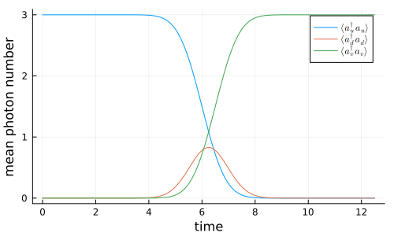
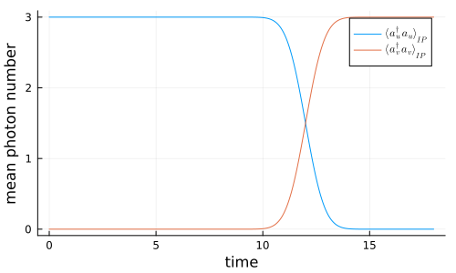

Simple Pulse Delay with a Virtual Cavity
In this example, a single-photon pulse is emitted from an input cavity, delayed by a virtual delay cavity, and finally captured by an output cavity. The delay cavity is driven by an incoming pulse u(t) and simultaneously emits a delayed pulse u(t-τ) using the pulse-shaping couplings introduced in V. R. Christiansen and K. Mølmer, Phys. Rev. A 113, 013730 (2026).
using QuantumInputOutput
using SecondQuantizedAlgebra
using Symbolics: Symbolics
using QuantumOptics
using QuantumOpticsBase: dagger
using SymbolicUtils
using LinearAlgebra
using Plots
using LaTeXStrings# symbolic Hilbert space
hu = FockSpace(:u)
hd = FockSpace(:d)
hv = FockSpace(:v)
h = hu ⊗ hd ⊗ hv
# symbolic operators
au = Destroy(h, :a_u, 1)
ad = Destroy(h, :a_d, 2)
av = Destroy(h, :a_v, 3)
# symbolic parameters
@variables g_u::Number g_in::Number g_out::Number g_v::NumberThe input cavity couples ($g_u(t)'*a_u$) into the input port of the delay cavity ($g_{in}(t)*a_d$) and the delay cavity couples the photons via the output port ($g_{out}(t)*a_d$) into the the output cavity ($g_v(t)'*a_v$). This leads to the following cascade of SLH elements.
G_u = SLH(1, g_u'*au, 0)
G_u2 = concatenate(G_u, SLH(1, 0, 0))
S2 = Matrix(I, 2, 2)
G_d = SLH(S2, [g_in*ad, g_out*ad], 0)
G_v = SLH(1, g_v'*av, 0)
G_v2 = concatenate(SLH(1, 0, 0), G_v)
G_cas = cascade(G_u2, G_d, G_v2)
H = hamiltonian(G_cas)
L = lindblad(G_cas)# short pulse delay
σ = 1.0
tp = 6*σ
τ = 0.5σ # pulse delay
u(t) = 1/(√(σ)*π^(1/4)) * exp(-(t - tp)^2 / (2*σ^2))
u_del(t_) = u(t_ - τ)
Tend = 2tp + τ
dt = Tend/5e2
T = [0:dt:Tend;]
gu_ = coupling_input(u, T)
gout_ = coupling_delay_out(u_del, u, T)
gin_ = coupling_delay_in(u_del, u, T)
gv_ = coupling_output(u_del, T)
dict_p_t = Dict([g_u, g_out, g_in, g_v] .=> [gu_, gout_, gin_, gv_])# numeric bases
n = 3
bu = FockBasis(n)
bd = FockBasis(n)
bv = FockBasis(n)
b = bu ⊗ bd ⊗ bv
H_QO = to_numeric(H, b; time_parameter = dict_p_t)
L_QO = [to_numeric(L[i], b; time_parameter = dict_p_t) for i = 1:length(L)]
function input_output(t, ρ)
Ht = H_QO(t)
Jt = [L_QO[i](t) for i = 1:length(L_QO)]
return Ht, Jt, dagger.(Jt)
end# time evolution
ψ0 = fockstate(bu, n) ⊗ fockstate(bd, 0) ⊗ fockstate(bv, 0)
t_, ρt = timeevolution.master_dynamic(T, ψ0, input_output)
au_qo = to_numeric(au, b)
ad_qo = to_numeric(ad, b)
av_qo = to_numeric(av, b)
nu = real.(expect(dagger(au_qo)*au_qo, ρt))
nd = real.(expect(dagger(ad_qo)*ad_qo, ρt))
nv = real.(expect(dagger(av_qo)*av_qo, ρt))p = plot(T, nu; label = L"\langle a_u^\dagger a_u \rangle")
plot!(p, T, nd; label = L"\langle a_d^\dagger a_d \rangle")
plot!(p, T, nv; label = L"\langle a_v^\dagger a_v \rangle")
plot!(
p;
xlabel = "time",
ylabel = "mean photon number",
grid = true,
legend = :best,
size = (500, 300),
)
p
We can see that the pulse is perfectly absorbed by the delayed output mode $v(t) = u(t-\tau)$
Interaction picture for the input and delay cavities
Introducing a separate cavity to delay the pulse can be a big disadvantage if one has multiple modes. To eliminate the delay cavity, we can transform into the interaction picture of the output and delay cavity coupling. This is, however, only possible if the delay is larger than the pulse, because only then we have $g_{in}(t) \approx g_{v=u}(t)$. Nevertheless, since in most cases only the relative delay between different modes is crucial, e.g. for two arms of an interferometer, we can simply add a constant delay $T_c \gg \sigma$ to all modes.
G_d_in = SLH(S2, [g_in*ad, 0], 0)
H_ud = hamiltonian(cascade(G_u2, G_d_in))
H_int_sym_ = simplify(H - H_ud)
M(i, j) = Symbolics.variable(Symbol("M_{$(i)$(j)}"); T = Complex{Real})
a0_ls = [au, ad]
la = length(a0_ls)
a_int_ls = [sum(M(i, j)*a0_ls[j] for j = 1:la) for i = 1:la]
int_dict = Dict([a0_ls; adjoint.(a0_ls)] .=> [a_int_ls; adjoint.(a_int_ls)])H_int_sym = simplify(substitute(H_int_sym_, int_dict))\[0.5 ~ \mathtt{g_{out}} ~ \mathtt{g_{v}} ~ \mathrm{imag}\left( \mathtt{M_{{21}}} \right) - 0.5 ~ \mathtt{g_{out}} ~ \mathtt{g_{v}} ~ \mathrm{real}\left( \mathtt{M_{{21}}} \right) ~ \mathit{i} a_{\mathrm{u}}a_{\mathrm{v}}^{\dagger} + 0.5 ~ \mathrm{conj}\left( \mathtt{g_{out}} \right) ~ \mathrm{conj}\left( \mathtt{g_{v}} \right) ~ \mathrm{imag}\left( \mathtt{M_{{21}}} \right) + 0.5 ~ \mathrm{conj}\left( \mathtt{g_{out}} \right) ~ \mathrm{conj}\left( \mathtt{g_{v}} \right) ~ \mathrm{real}\left( \mathtt{M_{{21}}} \right) ~ \mathit{i} a_{\mathrm{u}}^{\dagger}a_{\mathrm{v}} + 0.5 ~ \mathtt{g_{out}} ~ \mathtt{g_{v}} ~ \mathrm{imag}\left( \mathtt{M_{{22}}} \right) - 0.5 ~ \mathtt{g_{out}} ~ \mathtt{g_{v}} ~ \mathrm{real}\left( \mathtt{M_{{22}}} \right) ~ \mathit{i} a_{\mathrm{d}}a_{\mathrm{v}}^{\dagger} + 0.5 ~ \mathrm{conj}\left( \mathtt{g_{out}} \right) ~ \mathrm{conj}\left( \mathtt{g_{v}} \right) ~ \mathrm{imag}\left( \mathtt{M_{{22}}} \right) + 0.5 ~ \mathrm{conj}\left( \mathtt{g_{out}} \right) ~ \mathrm{conj}\left( \mathtt{g_{v}} \right) ~ \mathrm{real}\left( \mathtt{M_{{22}}} \right) ~ \mathit{i} a_{\mathrm{d}}^{\dagger}a_{\mathrm{v}}\]
L_int_sym = simplify.(substitute.(L, Ref(int_dict)))
L_int_sym[1]\[\mathrm{conj}\left( \mathtt{g_{u}} \right) ~ \mathrm{real}\left( \mathtt{M_{{11}}} \right) + \mathtt{g_{in}} ~ \mathrm{real}\left( \mathtt{M_{{21}}} \right) + \left( \mathrm{conj}\left( \mathtt{g_{u}} \right) ~ \mathrm{imag}\left( \mathtt{M_{{11}}} \right) + \mathtt{g_{in}} ~ \mathrm{imag}\left( \mathtt{M_{{21}}} \right) \right) ~ \mathit{i} a_{\mathrm{u}} + \mathrm{conj}\left( \mathtt{g_{u}} \right) ~ \mathrm{real}\left( \mathtt{M_{{12}}} \right) + \mathtt{g_{in}} ~ \mathrm{real}\left( \mathtt{M_{{22}}} \right) + \left( \mathrm{conj}\left( \mathtt{g_{u}} \right) ~ \mathrm{imag}\left( \mathtt{M_{{12}}} \right) + \mathtt{g_{in}} ~ \mathrm{imag}\left( \mathtt{M_{{22}}} \right) \right) ~ \mathit{i} a_{\mathrm{d}}\]
L_int_sym[2]\[\mathtt{g_{out}} ~ \mathrm{real}\left( \mathtt{M_{{21}}} \right) + \mathtt{g_{out}} ~ \mathrm{imag}\left( \mathtt{M_{{21}}} \right) ~ \mathit{i} a_{\mathrm{u}} + \mathtt{g_{out}} ~ \mathrm{real}\left( \mathtt{M_{{22}}} \right) + \mathtt{g_{out}} ~ \mathrm{imag}\left( \mathtt{M_{{22}}} \right) ~ \mathit{i} a_{\mathrm{d}} + \mathrm{conj}\left( \mathtt{g_{v}} \right) a_{\mathrm{v}}\]
# long pulse delay
σ = 1.0
tp = 6*σ
τ = 6σ # pulse delay
u(t) = 1/(√(σ)*π^(1/4)) * exp(-(t - tp)^2 / (2*σ^2))
u_del(t_) = u(t_ - τ)
Tend = 2tp + τ
dt = Tend/5e2
T = [0:dt:Tend;]
gu_ = coupling_input(u, T)
gout_ = coupling_delay_out(u_del, u, T)
gin_ = coupling_delay_in(u_del, u, T)
gv_ = coupling_output(u_del, T)# interaction-picture coefficient matrix M(t) for u ↔ d
A_ud = coupling_matrix((gu_, gin_))
M_t = solve_mode_evolution(A_ud, T)
M_ls = [M(i, j) for i = 1:la for j = 1:la]
M_t_ls = [t -> M_t(t)[i, j] for i = 1:la for j = 1:la]
p_t_sym = [g_u, g_in, g_out, g_v, M_ls...]
p_t_num = [gu_, gin_, gout_, gv_, M_t_ls...]
dict_p_t_int = Dict(p_t_sym .=> p_t_num)
au_int = destroy(bu) ⊗ one(bv)
ad_int = one(bu ⊗ bv)
av_int = one(bu) ⊗ destroy(bv)
operators = Dict(
[au, au', ad, ad', av, av'] .=> [au_int, au_int', ad_int, ad_int', av_int, av_int'],
)
H_int_QO = to_numeric(H_int_sym, b; time_parameter = dict_p_t_int, operators)
L_int_QO = [
to_numeric(L_int_sym[i], b; time_parameter = dict_p_t_int, operators) for
i = 1:length(L_int_sym)
]function input_output_int(t, ρ)
Ht = H_int_QO(t)
Jt = [L_int_QO[i](t) for i = 1:length(L_int_QO)]
return Ht, Jt, dagger.(Jt)
end
ψ0_int = fockstate(bu, 3) ⊗ fockstate(bv, 0)
t_int, ρt_int = timeevolution.master_dynamic(T, ψ0_int, input_output_int)
nu_int = real.(expect(dagger(au_int)*au_int, ρt_int))
nv_int = real.(expect(dagger(av_int)*av_int, ρt_int))Above we introduced the unity matrix for the delay cavity operators which guarantees that it does not have an effect. We can see that the delayed pulse is perfectly absorbed.
p = plot(T, nu_int; label = L"\langle a_u^\dagger a_u \rangle_{IP}")
plot!(p, T, nv_int; label = L"\langle a_v^\dagger a_v \rangle_{IP}")
plot!(
p;
xlabel = "time",
ylabel = "mean photon number",
grid = true,
legend = :best,
size = (500, 300),
)
p
Package versions
using InteractiveUtils
versioninfo()
using Pkg
Pkg.status(
[
"QuantumInputOutput",
"SecondQuantizedAlgebra",
"QuantumOptics",
"Plots",
"LaTeXStrings",
],
mode = PKGMODE_MANIFEST,
)Julia Version 1.12.6
Commit 15346901f00 (2026-04-09 19:20 UTC)
Build Info:
Official https://julialang.org release
Platform Info:
OS: Linux (x86_64-linux-gnu)
CPU: 4 × AMD EPYC 7763 64-Core Processor
WORD_SIZE: 64
LLVM: libLLVM-18.1.7 (ORCJIT, znver3)
GC: Built with stock GC
Threads: 4 default, 1 interactive, 4 GC (on 4 virtual cores)
Environment:
JULIA_PKG_SERVER_REGISTRY_PREFERENCE = eager
JULIA_DEBUG = Documenter
JULIA_NUM_THREADS = auto
Status `~/work/QuantumInputOutput.jl/QuantumInputOutput.jl/docs/Manifest.toml`
[b964fa9f] LaTeXStrings v1.4.0
[91a5bcdd] Plots v1.41.6
[18f9eda6] QuantumInputOutput v0.3.0 `~/work/QuantumInputOutput.jl/QuantumInputOutput.jl`
[6e0679c1] QuantumOptics v1.2.6
[f7aa4685] SecondQuantizedAlgebra v0.9.2This page was generated using Literate.jl.